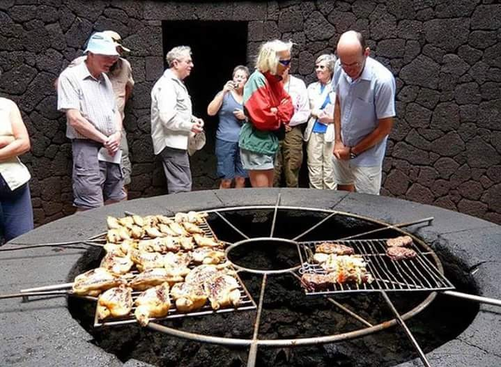
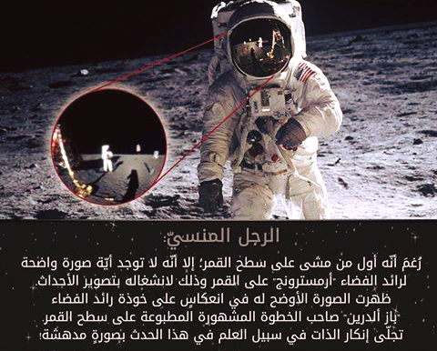
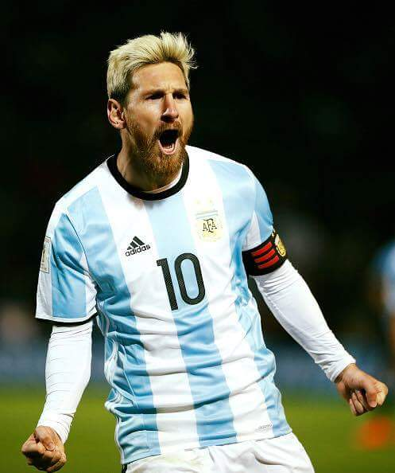
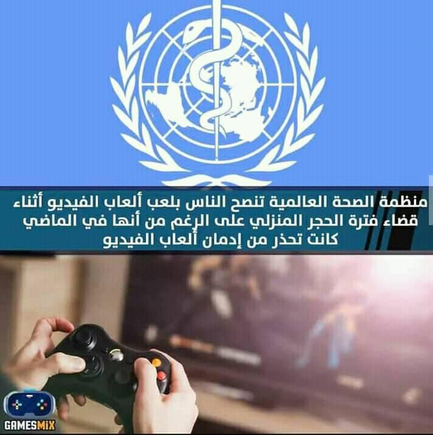
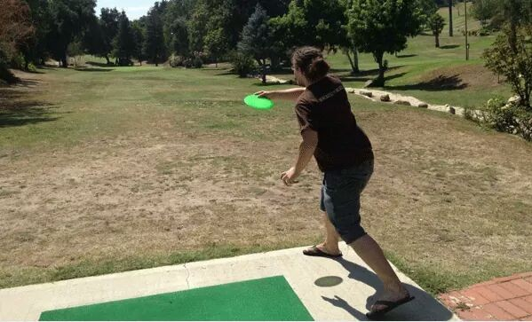

Entertainment
Building a restaurant on top of a massive heat source is not the easiest task. Architects Eduardo Caceres and Jesus Soto had to lay 9 layers of basalt rock in lieu of digging down to build a foundation.
Sports
Enrique had previously hailed Messi as the best player in the world. However, the veteran coach’s views have now changed as he believes that Messi and Ronaldo’s ability to exceed expectations is what's more important.

Technology
In the late 1950s and early 1960s, the United States was engaged in the Cold War, a geopolitical rivalry with the Soviet Union.[14] On October 4, 1957, the Soviet Union launched Sputnik 1, the first artificial satellite. This surprise success fired fears and imaginations around the world.
Sports
Lionel Messi is an Argentine professional footballer who has represented the Argentina national football team as a forward since his debut in 2005. Since then, Messi has scored 71 goals in 140 international appearances.


Technology
For gaming disorder to be diagnosed, the behaviour pattern must be of sufficient severity to result in significant impairment in personal, family, social, educational, occupational or other important areas of functioning and would normally have been evident for at least 12 months.
Sports
WORLD EXCLUSIVE: From his son's devastation to the Camp Nou president's betrayal, the Argentine explained all on what happened with his attempted exit
Entertainment
Rolling shutter is a method of image capture in which a still picture (in a still camera) or each frame of a video (in a video camera) is captured not by taking a snapshot of the entire scene at a single instant in time but rather by scanning across the scene rapidly, either vertically or horizontally.
